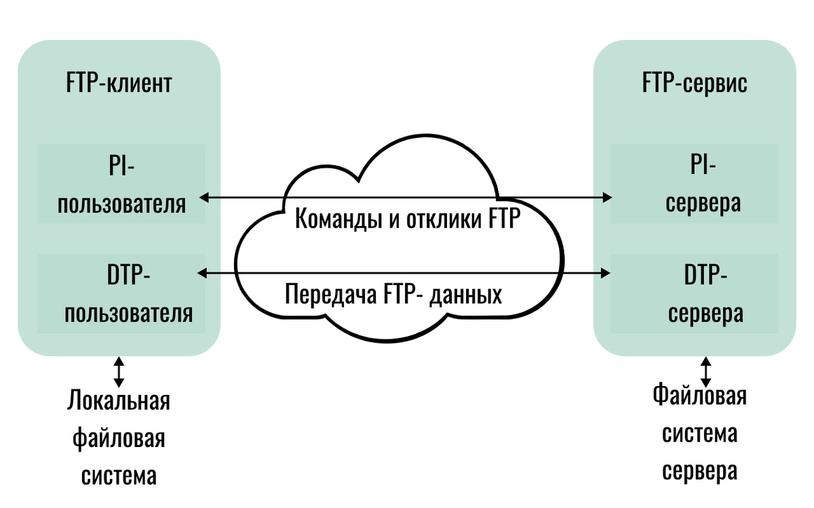

Основы файловых архивов
В Интернете существует множество файловых архивов — своего рода библиотек, хранящих файлы с программным обеспечением, графикой, музыкой и другой информацией. Доступ пользователей к файлам в файловых архивах возможен как по протоколу HTTP, так и по специальному протоколу передачи файлов FTP (File Transfer Protocol). FTP позволяет подключаться к серверам файловых архивов, просматривать содержимое каталогов и загружать файлы с сервера или на сервер. На тот случай, если передача файла прерывается по каким-либо причинам, протокол FTP предусматривает средства для докачки файла, что бывает очень удобно при передаче больших файлов. Адрес файла на сервере файлового архива включает в себя протокол доступа к файлу, имя сервера и полное имя файла. Так, если доступ к файлу htm.exe, находящемуся на сервере com.edu, осуществляется по протоколу FTP, его адрес запишется следующим образом:
ftp://com.edu/htm.exe
 Многие файлы, принимаемые по протоколу FTP, являются сжатыми, т. е. уменьшенными в размере. Сжатые файлы занимают меньше места на диске, быстрее передаются по сети. Имена таких файлов обычно заканчиваются расширениями zip, arj, rar и другими в зависимости от типа программы-архиватора, в котором они были созданы. После копирования сжатого файла его следует распаковать, т. е. восстановить его первоначальный вид.